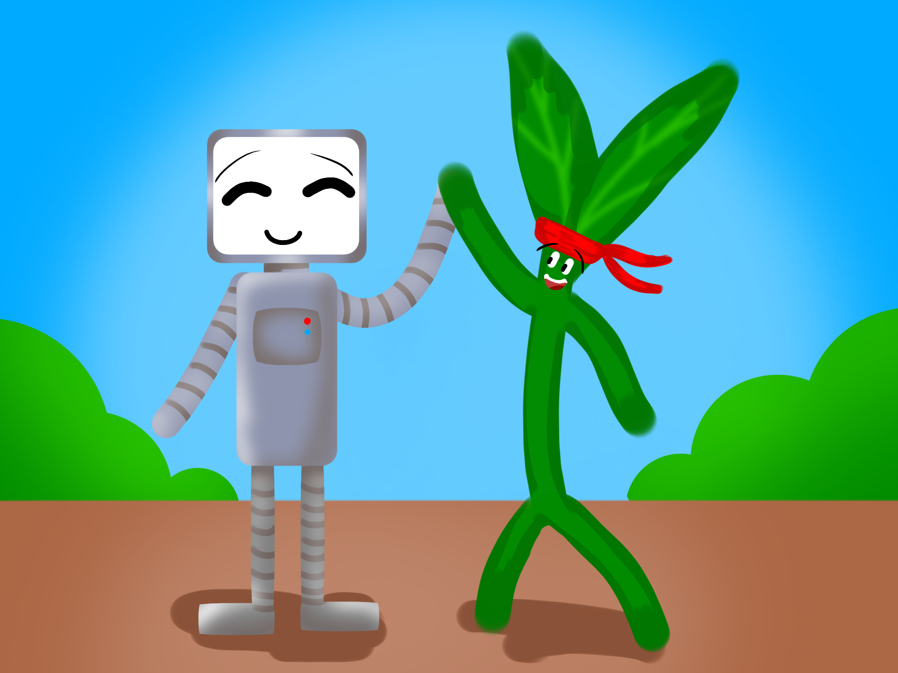
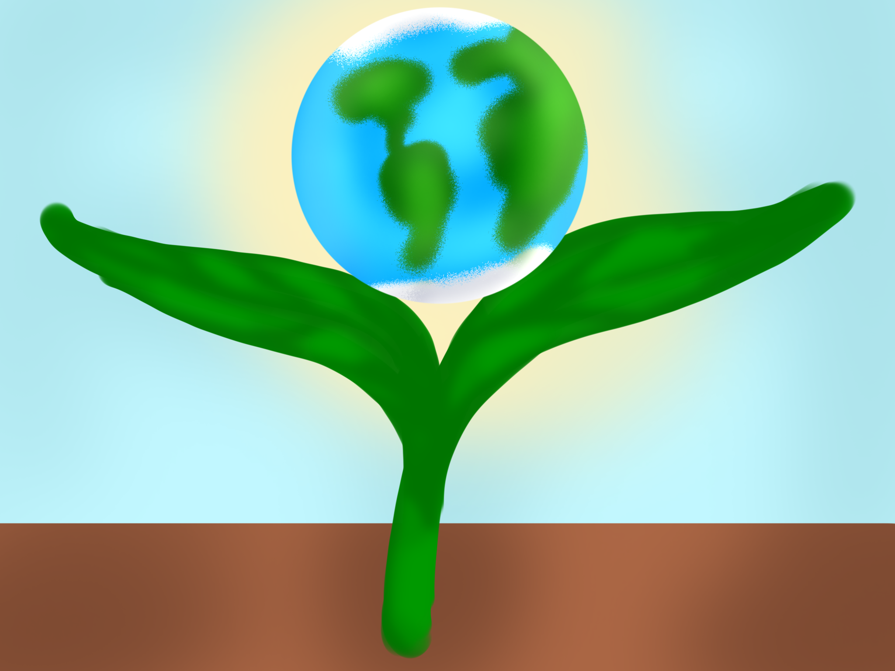
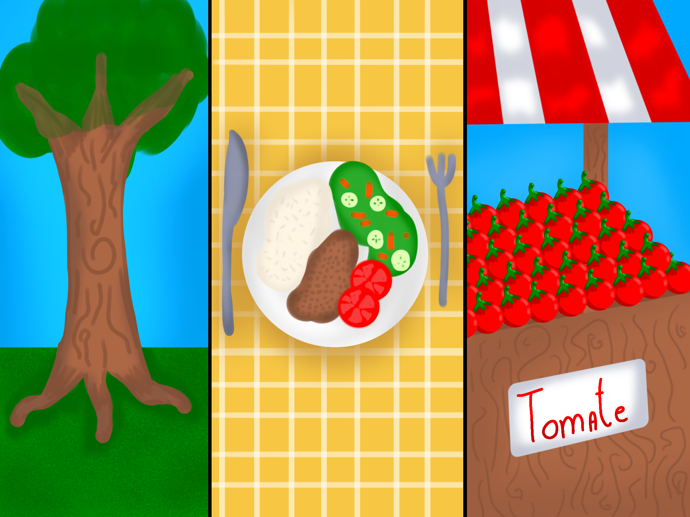
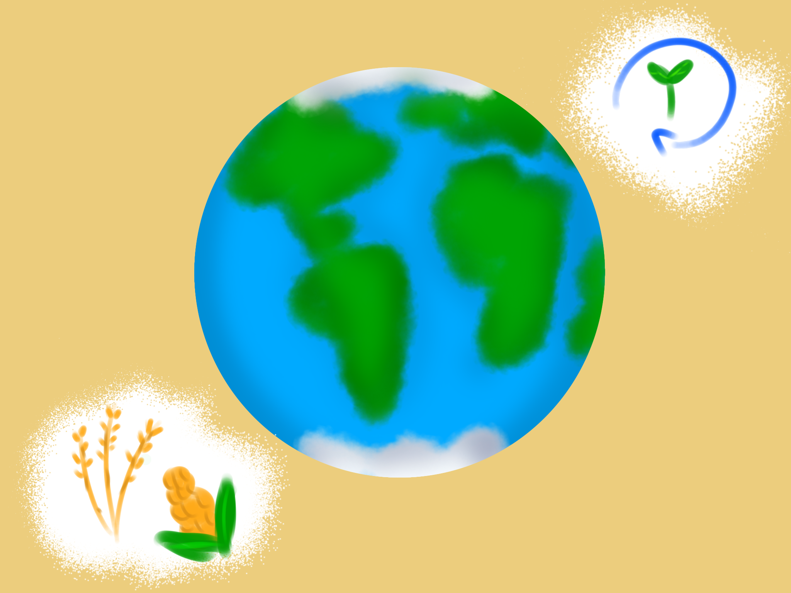
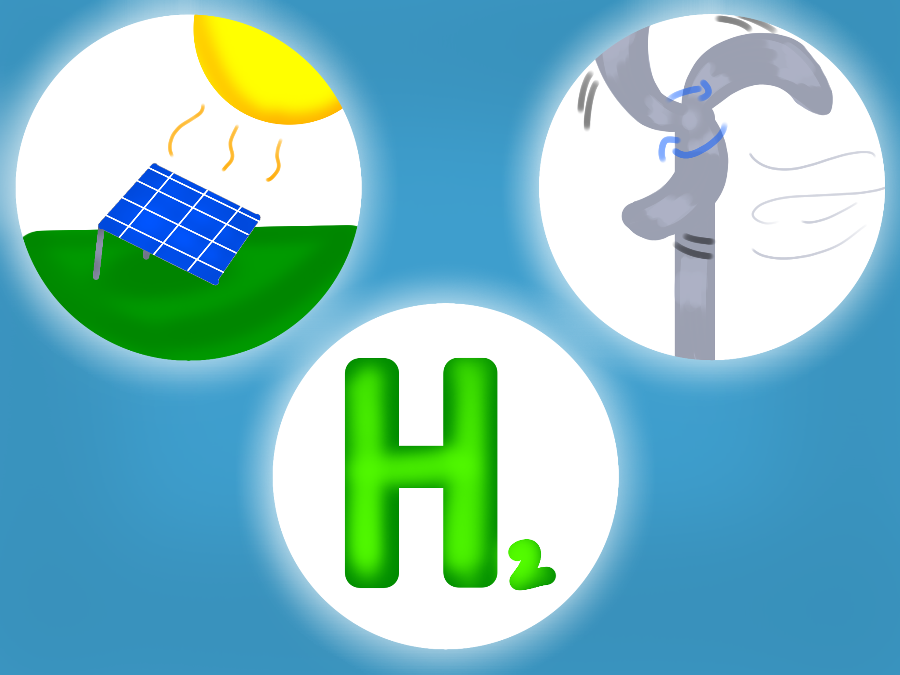

Tecnologia no campo: Sustentabilidade no futuro
Muitos pensam que a tecnologia e a natureza são dois mundos diferentes, entretanto, elas são uma via de mão dupla.
A tecnologia extrai matéria-prima e inspira-se na natureza, um exemplo é o trem-bala japonês cuja frente foi projetada para reduzir o ruído, usando o bico do pássaro-martim pescador como modelo.
Além disso, o uso de tecnologias como monitoramento por satélites, permitem prever, amenizar ou evitar desastres naturais e estudos como o da biotecnologia possibilita restaurar ecossistemas.

O agro sustentável é um modelo de produção com o objetivo de continuar atendendo as demandas atuais, porém, reduzindo o impacto ao meio ambiente. É um aliado em potencial para a contemporaneidade, pois, com o aumento da população mundial, necessita-se de mais comida, paralelamente, os alertas climáticos e os de emergência ambiental mostraram a importância de preservamos os ecossistemas.

- Pilar Ambiental: não poluir os recursos naturais, otimizar o uso da água, proteger o solo contra a erosão.
- Pilar Social: comprometer-se com o bem estar da comunidade, garantindo a segurança dos alimentos consumidos e protegendo o ambiente para as futuras gerações.
- Pilar Econômico: boa rentabilidade, agrega valor ao produto e gera empregos.

Modelo de produção que utiliza tecnologias e sensores para aplicar insumos somente onde e quando necessário, reduzindo o risco de contaminação do solo e da água.
São produtos de base biológica podendo ser microrganismos ou inimigos naturais, logo, possuem menor impacto ambiental.
Baseia-se em manter a camada vegetal (geralmente palha) para proteger o solo e reter o carbono, e então, plantar diretamente sobre a cobertura da cultura anterior.
O plantio divide espaço com animais ou árvores, que ajudam no ciclo dos nutrientes, diminuindo a necessidade de adição de fertilizantes.
Resume-se em alternar as culturas em um mesmo terreno, tendo como vantagens: a recuperação do solo e seus nutrientes, diversificar os componentes da camada vegetal e descontinuar os ciclos de doenças e pragas.
Para que as atividades do agronegócio tenham sucesso, elas dependem dos recursos naturais, como água limpa e solo saudável. Ao proteger o meio ambiente você está indiretamente influenciando na segurança alimentar, no equilíbrio climático e na qualidade do ar, além de cuidar das futuras gerações.

Classificamos como energia renovável aquelas que são produzidas a partir de recursos naturais que não se esgotam ou que têm um tempo de recuperação curto. No geral, elas diminuem a necessidade de usar combustíveis fósseis que liberam quantidades massivas de gases do efeito estufa.
Capta luz e calor por meio de placas solares para transformar em energia elétrica (Fotovoltaica) ou energia térmica/calor(térmico). Pode ser um investimento caro de primeiro momento, porém, com grande lucro a longo prazo. É fácil encontrar um lugar para instalá-las podendo ser em cima dos telhados de galpões ou áreas não cultivadas.
Na agricultura, por exemplo, podem fornecer energia para irrigação, bombeamento ou para suprir gastos energéticos em climatizadores.
Ela usa turbinas para transformar a energia de movimento (mecânica) dos ventos em energia elétrica. Alguns produtores arrendam a terra para a instalação dessas turbinas, assim, a empresa responsável por elas gera uma renda extra mensal para o agricultor. Dentre suas vantagens, destaca-se o fato de ocupar pouco espaço, ou seja, é possível continuar plantando ao redor das turbinas.
É um combustível obtido por meio da eletrólise de água. Quando a energia utilizada para a sua produção é limpa (como a solar e a eólica) o resultado é um combustível livre de emissões de carbono, ou seja, ele não libera CO2 durante a sua queima. Ele pode ser utilizado para criar amônia verde e substituir os fertilizantes fósseis, além de promover a independência energética.

Caso o vídeo não carregue: ▶ Assistir no YouTube